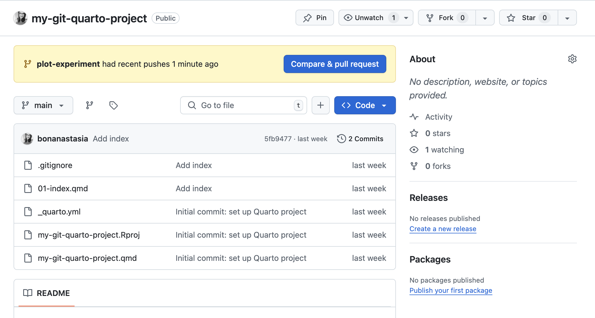
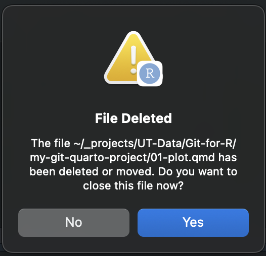

18 Working with feature branches
🎯 Goal: By the end of this chapter, you’ll know what a feature branch is, how to make one, and how to merge one back into your main project.
In Git, a branch is like a parallel universe for your code. You can work on a new idea or fix a bug without messing up the main project. When you’re ready, you bring your changes back to the main project with a merge.
18.1 Why Use Branches?
Let’s say you’re working with teammates. One of you is writing the introduction, another is cleaning the data, and a third is building plots.
If you all worked on the main branch at the same time, you’d likely constantly bump into each other — accidentally overwriting work or creating conflicts. Branches let everyone work on their own part of the project safely.
18.2 🌱 Step 1: Create a New Branch
Before we start, let’s look at what branches exist in our project.
In your terminal, run the following command:
git branch
You’ll likely just see the main branch with an * symbol next to it. The asterisk tells you this is the branch you are currently working on in Git. We set this up at the start of our Git workflow.
Now, let’s say you wanted to try a new chart using the ggplot library, but you weren’t sure if you’re ready to use this in the full project. You’d like some room to experiment a bit before fully committing your work to the main project. This is where a feature branch comes in.
Before we jump into making our first branch, let’s cover some best practices when naming feature branches:
- Use lowercase and hyphens (avoid spaces, underscores, or uppercase letters).
- Keep names short but descriptive (include enough context to understand purpose:
fix-overflow-navbar, notfix-bug). - Use consistent tense (preferably use a verb-noun format like add-navbar or fix-login-bug).
There are more conventions you would want to follow (such as using prefixes for branch types such as feature/, bugfix/, etc.) especially if working within a developer team, but for now these will be enough to get you started.
Let’s try making a new branch now.
Run the following command in the terminal:
git checkout -b add-plot-experiment
You should see a response in the terminal saying something like:
Switched to a new branch ‘add-plot-experiment’
This command did two things:
checkout: Tells Git you want to switch to another branch.-b add-plot-experiment: the-bflag tells Git that you’ll be creating a new branch calledadd-plot-experiment. Without the flag, Git would try to switch to a branch that already existed.
Now let’s confirm that you’re on the new branch.
- Run the branch command again:
git branchYou’ll see something like:
*add-plot-experiment
mainRemember, the * shows your current branch. So you’re now on add-plot-experiment, a “sandbox” that’s separate from your main branch in Git.
18.3 Step 2: make and commit changes on the new branch
Now that you’re on this new feature branch (which is an exact clone of our main branch at the time it is created), we can begin to safely experiment. You can make changes to our branch without worrying about messing up the work on our main branch.
Let’s try adding some new files to test this out.
In RStudio, do the following:
Make a new quarto file called
01-plot.qmdInside the file, make a new code block cell and add the following code:
library(tidyverse) ggplot(mtcars, aes(x=hp, y=mpg, color=cyl)) + geom_point(size=3)Run the cell to generate a simple ggplot() scatterplot.
Save the file.
Now, we’ll add the new plot file to Git by completing the normal Git workflow steps:
- Run
git statusto see what’s changed. - Type and run
git add 01-plot.qmdto tell Git to start tracking your new file. - Run
git statusagain to make sure your new file showing under “changes to be committed”. - Run
git commit -m "Add experimental plot"to take a snapshot of your changes.
This process is exactly the same as it has been for our other updates. However, this time you’ve saved the snapshot of your file only to the add-plot-experiment branch, not to main.
Importantly, these changes have not been pushed to Github yet. We’ll do that next.
18.4 Step 3: push the new branch to GitHub
Once you’ve committed some changes on your branch, you’ll probably want to back up your work by pushing it to Github.
The syntax to add a new branch to your repo is just like when we added our main branch during our initial project setup:
git push -u origin branch-nameThis command does two things:
- Creates the new branch on the GitHub project.
- Links your local branch to it.
So if you wanted to add your new add-plot-experiment branch, for example, you’d type and run:
git push -u origin add-plot-experimentTerminal would show a response like:
To github.com:username/my-git-quarto-project.git [new branch] add-plot-experiment -> add-plot-experiment branch ‘add-plot-experiment’ set up to track ‘origin/add-plot-experiment’.*
If you go to your Github repo page, you’ll now see the branch listed in your GitHub repo.

18.5 Merging back into main
If you’re happy with your changes on your feature branch and want to add it to your main project, you’ll do so by merging the changes from your feature branch back into your main branch to incorporate them into your project.
To do so, follow the steps below.
Step 1: switch back to main
Run the following to get back to your main branch:
git checkout mainRun
git branchagain. The asterisk should show next tomainagain.
Ok, now that we’re on a main branch, we want to bring in the changes from add-plot-experiment.
Heads-up: if you’ve still got your 01-plot.qmd file open in R Studio when you switch back to your main branch, you’ll get a pop-up telling you that the plot file has been deleted (see screenshot). That’s because the file doesn’t exist yet on the main branch. Hit the blue Yes button in the pop to close the file. Don’t worry though, the file still exists on your add-plot-experiment branch because you made a snapshot of your work with your git commit.🤠

Step 2: merge the feature branch into main
Type and run:
git merge add-plot-experiment
This pulls the changes from your feature branch into the main project.
If everything goes smoothly, you’ll see a message like:
Updating abc1234..def5678 Fast-forward myfile.qmd | 10 ++++++++++ 1 file changed, 10 insertions(+)
Note: If Git can’t automatically combine changes, you’ll get a merge conflict. If this happens, you’ll need to resolve the issues following the steps in the last chapter (see: How to resolve a merge conflict.
In your R Studio file pane, you should now see the 01-plot.qmd file listed (you may need to refresh).
Next up
Now that you understand the basics of how to make feature branches and have an baseline understanding of how merging works, we’ll show you how to use Github’s pull request feature to review changes and get feedback (the workflow we’d recommend).